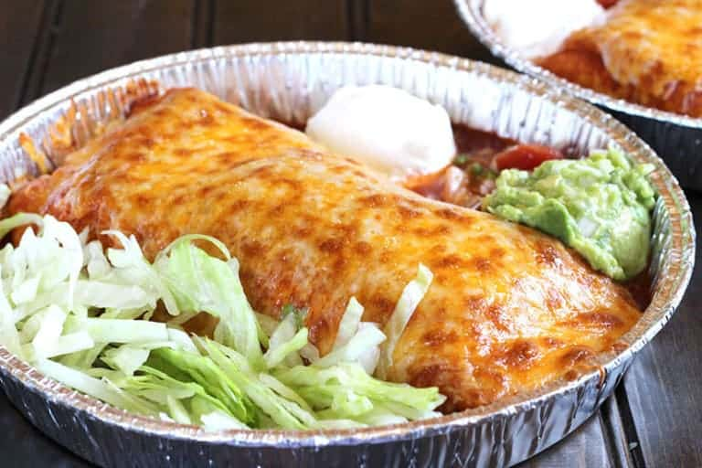

Enchilada Recipe

Description:
Totally awesome enchilada recipe
Ingredients:
- 1x 15oz can tomato sauce
- 1x 6oz can tomato paste
- 2 tsp Creaole-style seasoning
- 1x 12oz package corn tortillas
- 1x 8oz package cheddar cheese, shredded
- 1x onion, diced
- 1x 6oz can sliced ripe olives
- 1x 6oz can sliced mushrooms
Steps
- Preheat oven to 350 degrees Fahrenheit (175 degrees Celcius)
- In a medium bowl, combine tomato sauce, tomato paste, and Creole-style seasoning
- Warm tortillas in microwave or in oven, dip in tomato sauce mixture, and place in casserole dish
- Fill each tortilla with cheese, onion, olives, and mushrooms. Roll
- Repeat step 4 until dish is full. Sprinkle cheese on top
- Bake in preheated oven for 25 to 30 minutes, or until cheese is melted